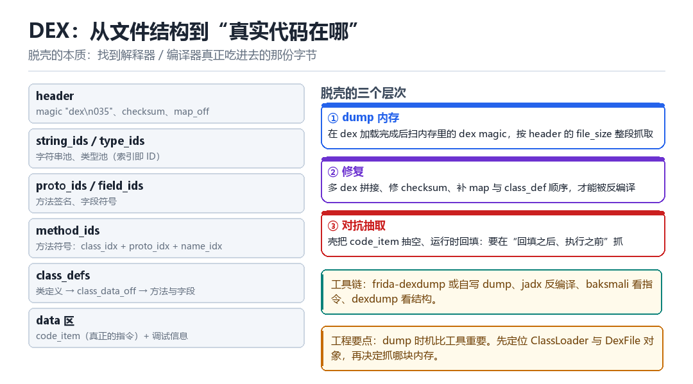

Android dex 详解
dex 执行与脱壳核心
脱壳不是“把文件拽出来”，而是“找到运行时真正执行的那份字节”。
14.1 结构：按 map_list 读就不会迷路

- header：magic、checksum、各段偏移与大小、
map_off。 - string_ids / type_ids：字符串池与类型池，后面所有结构都用索引引用它们。
- proto_ids / field_ids：方法签名与字段符号。
- method_ids：方法符号，由 class_idx + proto_idx + name_idx 组成。
- class_defs：类定义，指向
class_data_off，那里才有方法与字段列表。 - data 区：
code_item（真正的指令）与调试信息、注解等。
14.2 三个层次的脱壳
| 层次 | 做法 | 适用 |
|---|---|---|
| dump 内存 | 扫 dex magic，按 file_size 整段抓 | 整体加固、dex 完整加载 |
| 修复 | 拼多 dex、修 checksum、补 map 顺序 | dump 出来的文件不能反编译时 |
| 对抗抽取 | 在“回填之后、执行之前”抓 | 壳把 code_item 抽空、运行时回填 |
14.3 dump 的时机比工具重要
同一个 App，在不同时刻 dump，拿到的可能是完全不同的东西：启动时只有壳的桩代码，真正业务 dex 要等某个类被加载才解密。所以正确顺序是：先定位 ClassLoader 与 DexFile 对象，再在“目标类加载完成”这个事件上触发 dump。
Java.perform(() => {
Java.enumerateClassLoaders({
onMatch(loader) {
try {
const pcl = Java.cast(loader,
Java.use('dalvik.system.BaseDexClassLoader'));
console.log(pcl.getDexPathList().toString());
} catch (e) {}
}, onComplete() {}
});
});14.4 本章自测
- dex 的六段结构按顺序说出来。
- 为什么“dump 时机比工具重要”？
- 对抗抽取型壳，应该在哪一刻抓？
- dump 出来的文件打不开，可能是哪几处被改了？
14.5 深入：一个 code_item 长什么样
code_item 是 dex 里真正存指令的地方。结构是：寄存器数、入参个数、出参个数、try/catch 表偏移、调试信息偏移、以及指令字节数组。抽取型壳的做法是把指令数组清零或加密，运行时再填回去。
struct code_item {
u2 registers_size;
u2 ins_size;
u2 outs_size;
u2 tries_size;
u4 debug_info_off;
u4 insns_size;
u2 insns[insns_size]; // 真正的指令
};14.6 修复 dump 出来的 dex 要做哪些事
- 补 header：
file_size、data_size、data_off常被改坏。 - 修 checksum 与签名：
checksum是 adler32，signature是 sha1，都要重算。 - 整理 map_list：有些壳会把 map 打乱，导致反编译工具解析失败。
- 合并多 dex：如果业务被拆到多个 dex，要分别 dump 再拼。
- 验证：用
dexdump -d看指令是否完整，用 jadx 看能否反编译。
14.7 快速判断“壳到第几代”
| 观察点 | 一代 | 二代 | 三代+ |
|---|---|---|---|
| code_item 指令 | 完整 | 空/加密 | 空/加密 |
| 方法数量 | 正常 | 正常 | 大量桩方法 |
| dispatcher | 无 | 少量 | 巨型 switch |
| native 占比 | 低 | 中 | 高 |
14.8 原理推演：为什么“壳”必须让代码可执行
无论怎么加密、怎么抽取，最终 CPU 必须执行到真实的指令。所以“真实指令一定会在某个时刻以明文形式存在于内存中”——这是所有脱壳方法的理论基础。
| 时刻 | 明文在哪 | 可抓性 |
|---|---|---|
| 加载时 | 解密后的 dex 缓冲区 | 高 |
| 首次调用前 | 回填后的 code_item | 高 |
| 执行中 | 可能已被 JIT 成机器码 | 中 |
| 执行后 | 可能被重新加密 | 低 |
所以“最佳 dump 点”永远是“明文存在且尚未被清理”的那个窗口。找到这个窗口，比用什么工具重要得多。
14.9 数据细节：dex 的 checksum 怎么算
// checksum: adler32，范围是 [12, file_size)
// signature: sha1，范围是 [32, file_size)
// 两者都在 header 里，修改任何内容后必须重算修复时最容易忘的是“范围起点”：checksum 从偏移 12 开始（跳过 magic 与 checksum 自身），signature 从偏移 32 开始（跳过更多 header 字段）。起点错了，算出来的值永远对不上。
把 dex 当成一张可以按图索骥的地图
为什么 dump 早了是空壳，回填后才是完整 dex

把 classes.dex 拖进十六进制编辑器，开头八个字节是 dex\n035\0，再往后是 checksum、sha1 签名、file_size、一长串 xxx_ids_size 与 xxx_off。别被这一排数字吓住——它其实是一张目录：每个 off 告诉你去文件的哪个位置找那张表，每个 size 告诉你那张表有几行，而表里存的又全是「索引」，指向更早的字符串池和类型池。整个 dex 就是这么一张层层引用的大表，map_off 则是这张表的总目录。
脱壳之所以不是「把文件拽出来」，正是因为这个结构：壳可以只把 code_item 里的指令数组抽空，header、map、方法表全都留着——文件看起来完全合法，反编译出来却是一堆空方法。你真正要找的，是运行时被回填之后、CPU 真正执行的那份字节。
跟着一次类加载，看指令从哪冒出来
- 读 header → 对文件偏移 0 → 取 magic 验版本、
file_size验长度、map_off找总目录 → 结果：知道这个文件共有哪几段、各段在哪。 - 查 `class_defs` → 对类定义表 → 按类名找到目标那一行，取出
class_data_off→ 结果：定位到这个类的方法与字段列表。 - 查 `method_ids` → `code_item` → 对方法索引 → 经
proto_ids拿签名，经class_data拿code_off→ 结果：指向 data 区里真正的insns指令数组。 - ART 解析 → 对
DexFile对象 → 在DefineClass时把code_item读进内存、校验、准备编译或解释执行 → 结果：字节第一次变成可执行的方法体。 - 抽取型壳回填 → 对被抽空的
insns→ 在类真正被加载的前一刻解密、写回原位置 → 结果：此刻内存里的 dex 才是完整的，磁盘上那份仍是空的。 - dump 方 → 对这段内存 → 按
file_size整段抓出、补 header、重算 checksum 与 sha1、整理 map → 结果：一份能反编译的 dex；抓早了只有桩，抓晚了又可能已被改回去。
动手：从文件到内存各验一次
# host：看 header 与各段偏移
xxd -l 112 classes.dex | head -8 # magic + checksum + 各 off/size
dexdump -f classes.dex | head -40 # header 概览
dexdump -d classes.dex | grep -A12 'Class descriptor.*Lcom/target/SignUtil;'
# device：目标类加载之后再 dump（Frida 侧）
# dex_dump.js 内容：
# Java.perform(function () {
# var DexFile = Java.use('dalvik.system.DexFile');
# console.log('dex names =', DexFile.class.getName());
# Java.enumerateClassLoaders({ onMatch: function (l) {
# console.log('loader =', l.toString());
# }, onComplete: function () {} });
# });
frida -U -f com.target.app -l dex_dump.js成功：xxd 头八字节是 6465780a 30333500（dex\n035\0），dexdump -f 里 file_size 与实际文件大小一致、map_off 非零，dexdump -d 能打出目标类的 insns 指令而不是空方法体；运行时脚本列出 PathClassLoader / InMemoryDexClassLoader 等加载器。失败按三类分：dexdump 报 bad checksum，说明 header 被壳改过或你 dump 的是半成品，先按第 6 拍重算 adler32 与 sha1；指令数组全是 nop / 长度为 0，是典型的抽取型壳，得把触发点挪到「类被加载之后」；而枚举出的加载器里出现 InMemoryDexClassLoader，说明业务 dex 根本没落盘——磁盘上翻不到文件不是工具坏了，是这次本来就该从内存里抓。
| 现象 | 更像哪一代壳 | 下一步动作 |
|---|---|---|
| code_item 完整、能直接反编译 | 一代 / 未加固 | 直接当普通 dex 分析 |
| insns 全空但方法数正常 | 二代：抽取型 | 在类加载事件上触发 dump |
| 大量桩方法 + 巨型 switch | 三代 + VMP/混杂 | 先找 dispatcher，再逐段回填 |
| 出现 InMemoryDexClassLoader | 内存加载，无磁盘文件 | 从 DexFile 的 begin/size 抓内存 |
| bad checksum / map 打不开 | header 或 map 被改 | 补 file_size、重算 adler32 与 sha1、整理 map_list |
这张「header → class_defs → code_item」的地图，第 05 章 dexElements 数组里插进来的正是这样一份 dex；第 12 章那些 ArtMethod，就是 ART 在解析 class_data 时一个个造出来的；第 16 章做算法分析时，从 equals 回溯到计算函数，最终要读的也还是本章这段 insns。第六部拆企业壳、以及二期规划的 VMP→IR 路线，都会从「怎么在回填之后抓到它」继续往下走。